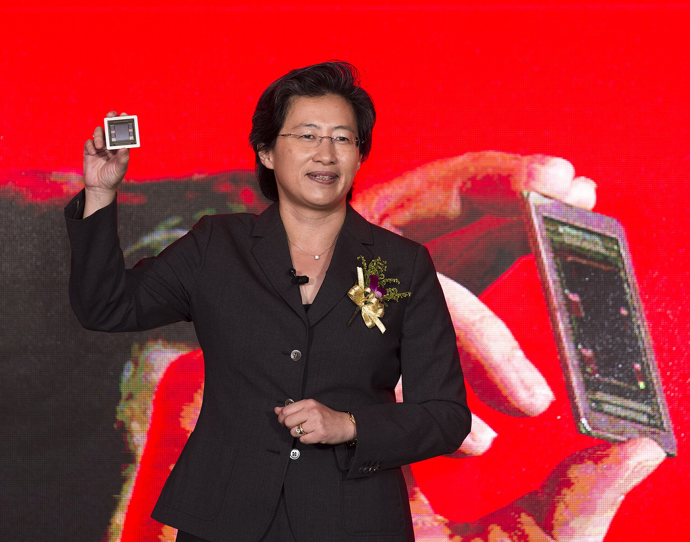

Financial figures here are cited to filings, company releases or reputable outlets in the Sources section, and will change with the next earnings season. Some of the narrative and anecdotes draw on three video profiles of AMD and Lisa Su, also listed in the Sources. Educational only, not investment advice.
Key findings
- AMD's lowest close was about $1.62 in July 2015, less than a year into Lisa Su's time as CEO, with a market value under $2 billion.
- Its two self-inflicted near-death moments were the $5.4 billion ATI purchase in 2006, more than half of which it later wrote off, and the server share that fell toward roughly 1% by the mid-2010s.
- The turnaround ran on two bets: the Zen chiplet architecture (2017) and a push into data-centre EPYC chips, which took AMD's server-CPU revenue share from low single digits to about 46% by 2026.
- The $49 billion Xilinx deal (closed Feb 2022) was all-stock, so a rising AMD share price lifted the price from the ~$35 billion agreed in 2020. It is the largest semiconductor acquisition on record.
- AMD passed Intel by market value in 2022 and crossed a $1 trillion valuation in September 2026. In AI accelerators it is a clear number two behind Nvidia.
Part 1Two cousins, two monster stocks
The two chip companies riding the AI wave hardest are Nvidia and AMD, and the people running them, Jensen Huang and Lisa Su, are distant cousins who met as adults, not at family dinners. Su has confirmed the relation and the no-family-dinners part in interviews. We covered Nvidia before; this page is about the other one.
Most people know AMD for gaming graphics cards. That undersells it. AMD is one of two companies that matter in desktop and server CPUs, and one of two that matter in standalone GPUs. For most of its half-century, the rival it could never shake was not Nvidia. It was Intel.

Part 2The Intel rivalry
Both companies trace back to Fairchild Semiconductor, the firm often called the cradle of Silicon Valley. Fairchild's talent kept leaking out: its two best-known founders, Robert Noyce and Gordon Moore, left to start Intel in 1968, and a year later Fairchild's sales director, Jerry Sanders, left to start AMD. From the beginning the two were uneven. Intel had the famous scientists and easy money; AMD was one of dozens of small chip startups scrapping for funding. One early backer of Sanders, by the account in the videos, was Noyce himself, so the rivalry was personal from day one.
For its first stretch AMD survived by riding Intel's slipstream. In the era of the IBM PC, big buyers refused to depend on a single supplier, so they forced Intel to license its x86 chip designs to a "second source." AMD was that second source. It built Intel's designs alongside Intel and shared in the standard that defined the PC. Think of it as drafting behind a cyclist: the follower spends less energy, and the leader is happy to have company.
AMD eventually decided it could not stay tied to Intel forever. It raised research spending, bought the chip-design firm NexGen in 1995 (and, almost by accident, the engineer who had led Intel's Pentium), and in 1999 launched the Athlon line. Athlon was faster than Intel's equivalent and cheaper, and it turned years of losses into a billion-dollar profit. By 2006 AMD's desktop share briefly rivalled Intel's and its server share had jumped from a sliver to over 20%. Riding that high, it made the bet that nearly killed it.
The rival AMD could never shake was not Nvidia. It was Intel.
Part 3The dark decade
A computer needs two main chips: a CPU, the general-purpose brain, and a GPU, the graphics processor. AMD led in neither market alone, but it saw a prize in holding both: combine them and you could sell a package Intel couldn't match. On the GPU side, only two firms were left after the 1990s shakeout, Nvidia and ATI. AMD looked at buying one of them. Nvidia was too big and too expensive, and a merger risked AMD being swallowed instead. ATI, smaller, was affordable. So in 2006 AMD bought ATI.
The price was about $5.4 billion: roughly $4.3 billion in cash, 58 million AMD shares, and a $2.5 billion loan to cover the rest. The strategy was sound, and it is the reason AMD can fight Nvidia in graphics today. The price was not. Within about a year AMD had to admit ATI was worth far less than it paid, and over the next two years it wrote off more than half the deal's value. The timing made it worse: three days after the ATI announcement, Intel shipped its Core 2 chips, excellent on both speed and power, and pulled away again.
Now AMD was fighting on two fronts, designing and manufacturing at once, with debt piling toward $5 billion. In 2008 it did the thing that looked like surrender and turned out to be wise: it spun off its factories, which became GlobalFoundries, and kept only chip design. It raised cash and let AMD stop trying to manage two very different businesses at the same time. But the bleeding continued. Desktop CPU share slid from near 50% toward 20%, server share fell from its mid-2000s peak toward roughly 1%, the stock sank under $2, and AMD sold its headquarters building for about $160 million. Wall Street analysts openly wondered whether the company would survive.
Part 4Lisa Su's two bets
Lisa Su became CEO in October 2014. She was an MIT-trained electrical engineer with a doctorate who had worked on chips at Texas Instruments and IBM before joining AMD in 2012. She told Bloomberg the job was "a dream come true," even though she inherited a company trading near $2 that one commentator called "deader than dead." After stabilising the basics (simplifying the company, protecting key customers, cutting costs) she made two strategic bets, each extremely hard on its own and far harder together.
Bet one: high-performance computing. AMD had drifted into the cheap middle of the market, selling budget chips on price. Su judged that the low end had no future: thin margins, no room to invest. She pointed the company at top-end performance instead and said the phrase "high-performance computing" so often in interviews that it became a tic. The payoff was Zen, launched in February 2017: a clean-sheet design built from small dies called "chiplets," stitched together into larger processors. Chiplets raise manufacturing yields and give AMD flexibility to mix and match, and the whole modern lineup is built on them. AMD had aimed for a 40% jump over its previous chips; the first-generation Ryzen beat Intel's eight-core i7 by a wide margin at less than half the price. Later Zen generations, on TSMC's 7nm process from 2019, took outright performance leadership.

Bet two: widen the business. AMD had leaned too long on PC chips alone. Su named three growth areas: gaming, the data centre, and embedded or immersive devices. Gaming was the quiet lifesaver. The reason AMD could straddle CPUs and GPUs was precisely the ATI deal that nearly sank it, and that let AMD win the big game consoles. PlayStation, Xbox and the Steam Deck all run AMD chips, a business worth a few billion dollars a year that helped cover the losses on the PC side during the lean years.
The far bigger prize was the data centre. Cloud providers and supercomputers buy enormous numbers of server CPUs, a market Intel had owned almost entirely. To take it, AMD first needed chips good enough, which is what Zen delivered, and then a reason to switch. Its pitch was total cost of ownership. For a data centre, the sticker price of a chip is the small part; power, cooling and maintenance over years of nonstop running are the rest. AMD's EPYC server line, built on Zen, argued it was both cheaper to buy and cheaper to run than Intel's Xeon, and it put a comparison tool on its own website to prove it. Enterprise buyers move slowly, but AWS, Microsoft Azure and Google Cloud all began using EPYC. The share crept, then climbed: from low single digits in the mid-2010s to about 46% of server-CPU revenue by 2026.
Part 5The Xilinx trick
To widen out once more, AMD bought Xilinx, the leader in FPGAs: a third kind of chip, after CPUs and GPUs, that can be reprogrammed after it is made and shows up in cars, communications gear and specialised equipment. Owning it gave AMD a broader product range to sell into the same data-centre and networking customers. The strategy is ordinary. The way AMD paid for it is the interesting part.
AMD had only a few billion dollars of spare cash, nowhere near enough to buy a company this size. So it paid in its own stock instead: every Xilinx share would convert into 1.7234 AMD shares, a fixed ratio. When the deal was announced in October 2020, that ratio was worth about $35 billion. Deals this large take more than a year to clear regulators, and for the whole wait the price floats with the buyer's share price, because the number of shares is fixed but their value is not.
By the time the deal closed on 14 February 2022, AMD's stock had risen roughly 40%. The same fixed share ratio was now worth about $49 billion, the largest semiconductor acquisition on record. In effect, a rising share price let AMD pay about $14 billion more for Xilinx without spending a single extra dollar of cash. When your own stock is soaring, it becomes a currency you can buy other companies with.
Part 6The AI race
Much of AMD's rise came from Intel's own stumble. For years Intel upgraded its chips in small annual steps, a strategy it called "tick-tock," and customers grumbled it was squeezing out improvements like toothpaste. Then Intel got stuck. Its move to the 10-nanometer manufacturing process ran into deep problems, and it sat at 14nm for years; in 2019 it had to apologise in writing to customers for being unable to supply enough chips. That is the trap of doing your own manufacturing: when the factory stalls, the whole product line stalls with it. AMD, having sold its factories, simply switched to TSMC when GlobalFoundries couldn't keep up.
The scoreboard caught up. AMD passed Intel by market value in 2022 for the first time, and crossed $1 trillion in September 2026. Intel, once the dominant chipmaker on earth, became the cautionary tale: in this industry a single wrong manufacturing bet can cost you the lead for a decade.
The fight with Nvidia is a different kind of contest from the one with Intel. Against Intel it was close to zero-sum, a straight battle over the same CPU customers. In AI, Su argues, demand so far outruns supply that there is room for more than one winner; buyers want working chips and don't much care whose name is on them. AMD's MI300 accelerators passed $5 billion in sales in 2024 and run real workloads for Microsoft and Meta. But Nvidia still earns many times more from AI chips, and it owns CUDA, the software developers build on, which makes switching away painful. AMD is a strong and fast-growing number two, not yet a challenger for the top spot.
The pattern is the one that runs through the rest of this series: in chips, leadership is rented, not owned. Every few years a new architecture can topple the leader, so a winner has to keep betting a large share of its worth on the next five years. The products you see on a shelf are the visible tip of research that started three to five years earlier. AMD kept making those bets, Intel stopped, and Nvidia is making them now. AMD's own story says the lead can change hands fast, which is exactly why no one at the top can relax.
NotesSources
Figures are cited to filings, company releases or reputable outlets. Some narrative framing and anecdotes come from the three video profiles listed at the end.
- Lisa Su became CEO October 2014, stock near $2–3, company near bankruptcy: IEEE Spectrum, CNBC
- Lowest close about $1.62 on 27 July 2015: Blofin (via Yahoo Finance data)
- ATI acquisition ~$5.4 billion, closed Oct 2006, $2.5 billion term loan: AMD 8-K press release (SEC), AMD pro forma financials (SEC); over half later written off: Ars Technica, Los Angeles Times
- Zen launched February 2017; Zen 2 on 7nm (2019); chiplet design: Wikipedia, Tom's Hardware
- EPYC server-CPU revenue share about 46.2% in 2026, up from ~1–2% in 2018: TechPowerUp / Mercury Research, Wccftech / Mercury Research
- MI300 data-centre GPU revenue above $5 billion in 2024, customers Microsoft and Meta: CRN, DataCenterDynamics
- Xilinx all-stock deal, 1.7234 ratio, ~$35B at announcement (Oct 2020) and ~$49B at close (14 Feb 2022), largest chip deal: AMD press release, AnandTech, Reuters via Yahoo
- AMD passed Intel by market value in 2022: CNBC; crossed $1 trillion September 2026: Wikipedia (Lisa Su)
- Video profiles used for narrative and anecdotes (Fairchild origins, Noyce as an early AMD investor, the second-source history, the ATI decision, the TCO pitch, and Lisa Su's "dream come true" / "deader than dead" / no-family-dinners remarks): 一口气了解AMD (小Lin说); 看蘇姿丰如何扭轉AMD (名人商業解密); AMD's CEO Wants to Chip Away at Nvidia's Lead, The Circuit with Emily Chang (Bloomberg Originals). Video content was summarised and paraphrased for compliance with licensing restrictions.
Educational only. Not investment advice. A living document; figures will be updated as companies report.